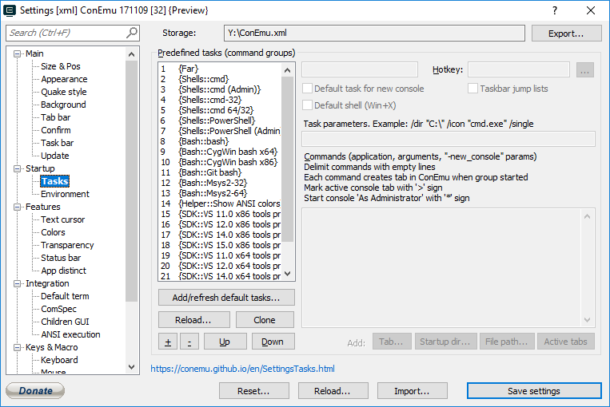

Task name (alias), surrounded by {...}, used in ‘[+] menu’, ‘Recreate dialog’ or ‘/cmd’ agrument of ConEmu.exe
Hotkey Choose hotkey for creating this task (not global, it works in ConEmu only)
Task parameters. Example: /dir "C:\" /icon "cmd.exe" /single Task parameters (‘/dir’, ‘/icon’) Example: /dir "C:\" /icon "cmd.exe" /single
Commands (application, arguments, "-new_console" params) Delimit commands with empty lines Each command creates tab in ConEmu when group started Mark active console tab with '>' sign Start console 'As Administrator' with '*' sign
Commands (application, arguments, ‘-new_console’) Delimit commands with empty lines Each command creates tab or pane on group start Mark active console tab with '>' sign Start console 'As Admin' with '*' sign
Add default tasks...
Reload...
+
-
Up
Down
Tab...
Startup dir...
File path...
Active tabs
RTEXT